网站导航
首页
创意
开发
在线
选购
最新资讯
关于
RaspberryPi
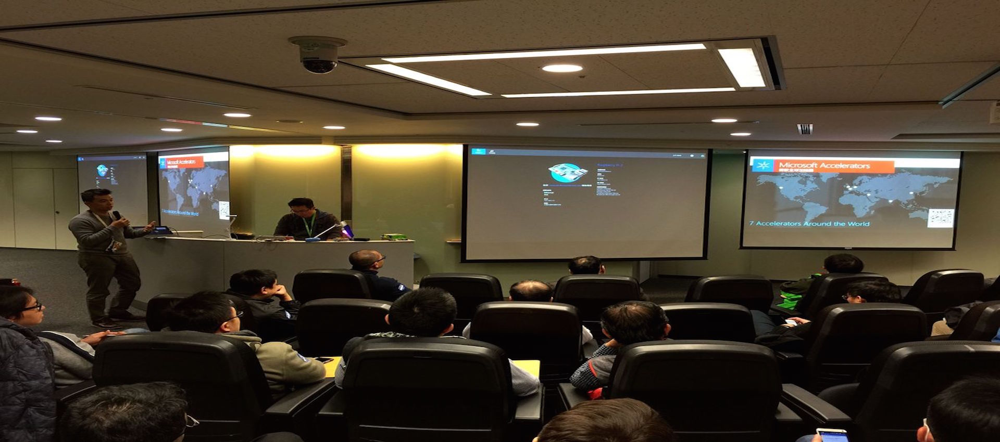
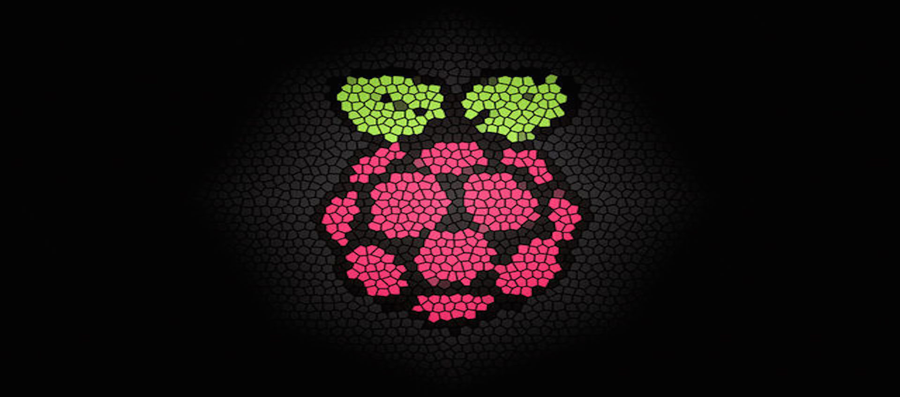
热门创意
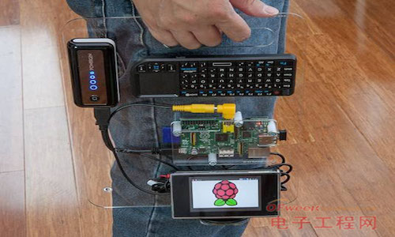
<随身便携电脑>
raspberrypi打造的随身电脑，随时随地玩转raspberrypi！
创意度 87%
创意成本¥
300
左右
随身便携电脑
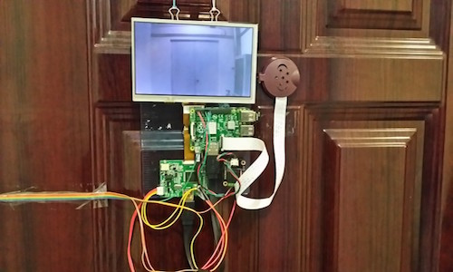
<实时监控门>
raspberry助你实时监控门外情况，安全！高端！
创意度 97%
创意成本¥
500
左右
实时监控门
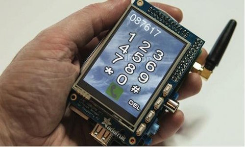
<RaspberryPi Phone>
RaspberryPi 打造的Phone，通话，短信，五脏俱全！
创意度 90%
创意成本¥
350
左右
RaspberrtPi Phone
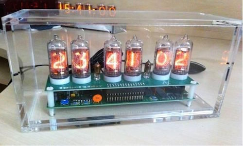
<Pi炫酷时钟>
Pi打造的炫酷时钟，精确的全球时间，还可以闹钟哦！
创意度 97%
创意成本¥
300
左右
Pi炫酷时钟
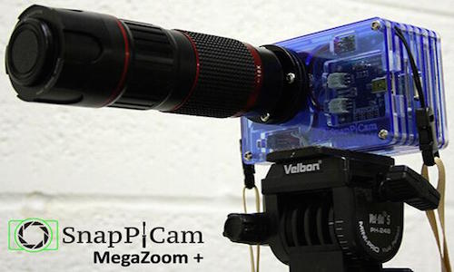
<Pi相机>
RaspberryPi制作的相机，照相，摄影，上传云端，定格美好时刻！
创意度 97%
创意成本¥
400
左右
Pi相机
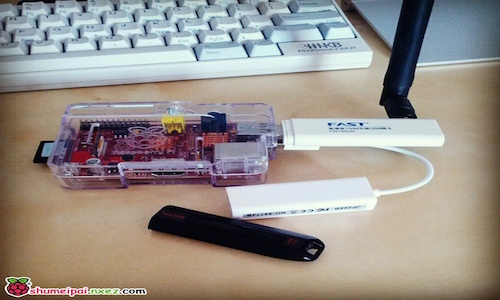
<Pi无线路由器>
简简单单的模块让Pi变身无线路由器！
创意度 95%
创意成本¥
250
左右
Pi无线路由器
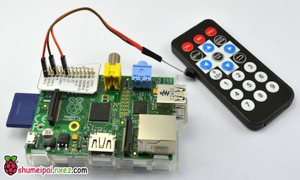
<红外遥控树莓派>
用红外遥控器遥控树莓派，让Pi变成无线遥控的影音中心！
创意度 100%
创意成本¥
300
左右
红外遥控树莓派
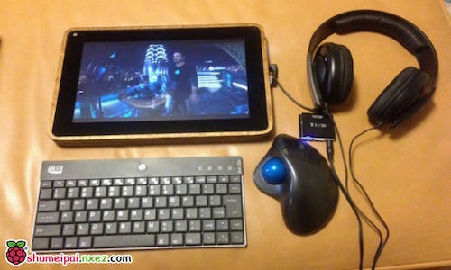
<DIY PiPad>
DIY的PiPad平板电脑，集所有实用功能于一身，还足够便携，基于Linux！
创意度 93%
创意成本¥
550
左右
DIY PiPad
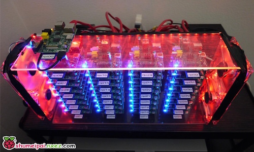
<Pi超级计算机>
由32块树莓派构建的超级计算机，低成本，高性能！
创意度 100%
创意成本¥
6000
左右
Pi超级计算机
更多创意鉴赏-->